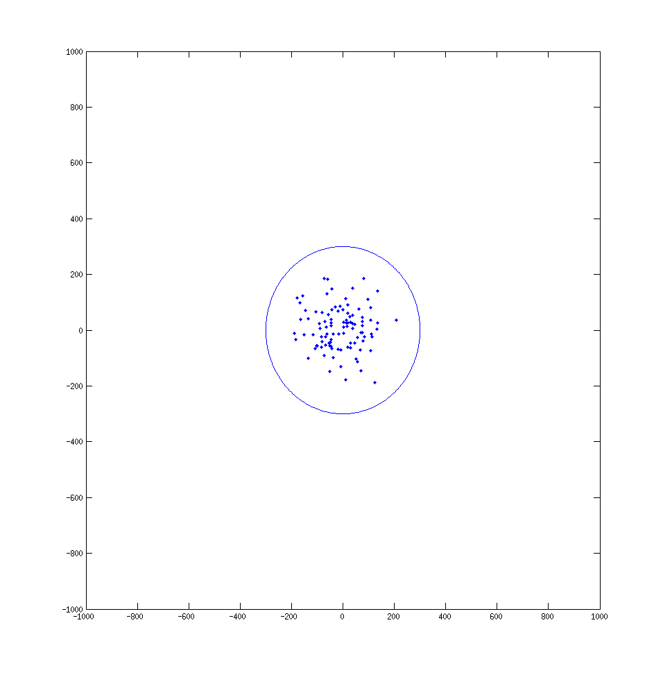
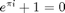
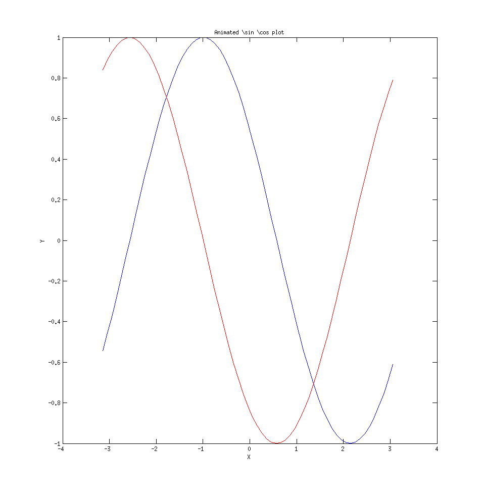

Contents
Learn some MATLAB stuff
This file contains some tips and tricks in a nice little tutorial format. It covers basic matrix operations, animating plots, decorating plots and debugging techniques.
Useful keys: Ctrl+R Comment line Ctrl+T Uncomment line F5 Save and run program
function learn_stuff % clc - clear console % clear - resets all variables % close all - closes all the figures clc; clear; close all % Call matrix_math() function matrix_math(); waitforbuttonpress % Call matrix_advanced() matrix_advanced(true); waitforbuttonpress % Let's look at a fancy plot fancy_plot(); waitforbuttonpress % This is a simple example of animating a plot simple_animated_plot(); end
Intro to matrix math
function matrix_math() % Matlab numbers are just 1x1 matrices a = 1; % 1x1 b = [4 2]; % 1x2 c = [1 0; 0 1]; % 2x2 d = [1,0; 0,1]; % equivalent to 'c' fprintf('Take a look at the Size column below:\n\n'); whos % Print out some sizes % Notice the three dots, to indicate that the statement continues on % the next line. fprintf('size(d): (%g, %g)\nlength(d): %g\nnumel(d): %g\n\n', ... size(d), length(d), numel(d)); % We don't need a-d anymore, so clear 'em! clear % Doesn't print anything now: whos % Real example: % You need to rotate an acceleration vector by Pi/2 acc = [1, 1]; % Rotation matrix (about z axis) % cos(x) -sin(x) % sin(x) cos(x) angle = pi/2; rotator = [cos(angle) -sin(angle); sin(angle) cos(angle)]; % Perform rotation new_acc = acc * rotator; % The order matters! If acc were a column vector (which, it % technically should be), then the order of operations would a have to % be: new_acc = rotator * acc; fprintf('Old acc: (%g, %g)\nNew acc: (%g, %g)\n', acc(1,1), acc(1,2), new_acc(1,1), new_acc(1,2)); % Arithmetic operators in MATLAB mean matrix-arithmetic. % If you want to do element-wise operations, use a dot. % Technically here you can just use a regular /, but its good practice % to use ./ normalized = new_acc ./ norm(new_acc) clear a = [1, 2, 3; 4, 5, 6; 7, 8, 9]; b = [9, 8, 7; 6, 5, 4; 3, 2, 1]; c = a*b d = a.*b end
Take a look at the Size column below:
Name Size Bytes Class Attributes
a 1x1 8 double
b 1x2 16 double
c 2x2 32 double
d 2x2 32 double
size(d): (2, 2)
length(d): 2
numel(d): 4
Old acc: (1, 1)
New acc: (1, -1)
normalized =
0.7071 -0.7071
c =
30 24 18
84 69 54
138 114 90
d =
9 16 21
24 25 24
21 16 9
Advanced matrix example
Here we use a matrix to store position data for some particles that then undergo a random walk. This is the cream in the coffee problem.
function matrix_advanced(boundary_condition) % Number of particles (can be very large!) num_particles = 100; % Length of the square side that the particles start in L = 100; % Cup radius and cup radius squared (to avoid costly square roots % later) cup_radius = L*3; cup_radius2 = cup_radius^2; % Time to run for (number of iterations, not explicit time) run_time = 1000; % Scale factor for random walk amount (keep it integer) scale = 3; % The particles are a num_particles x 2 matrix (meaning, one row for % each particle and each particle has 2 dimensions). % Subtract off half the side from each element to go from -L/2 to L/2 parts = randi(L, num_particles, 2) - 0.5*L; % Plot the particles as blue dots plot(parts(:, 1), parts(:, 2), '.b'); % Set the plot axis from -10*L to 10*L in both directions, to be able to see % the particles walk out axis(10*L.*[-1 1 -1 1]); for n=1:run_time % Generate displacement matrix % We make a random integer matrix of proper size with values 1, 2, % and 3, then subtract 2 to get values -1, 0, 1 dm = scale*(randi(3, num_particles, 2) - 2); tmp = dm + parts; % If we want a boundary condition, apply it. if boundary_condition % This is just the distance formula. We want to see of the new % position of the particle would put it outside the boundary. % A negative value in dist2 (distance squared) means that the % particle is out of bounds dist2 = (cup_radius2 - (tmp(:, 1).^2 + tmp(:, 2).^2)); % This is a little trick. What we do here is a boolean % operation. valid becomes a column vector of 0 or 1, % depending on if the particle is out of bounds or not. This % is neat because it allows us to then create a two column % vector (next line) to multiply against our displacement % matrix. This is much faster than a loop with many % conditionals. valid = dist2 > zeros(num_particles, 1); % The new particle matrix is the old one, plus the valid % elements of the dislocation matrix parts = parts + dm .* [valid valid]; else parts = tmp; end % This is an alternative (very slow) method for boundary % conditions and updating particles using common programming % practices % if boundary_condition % % Loop through all of the particles % for j=1:num_particles % % Make a temporary row vector % tmp = parts(j,:); % % % Get our random walk factors % rand_x = scale*(randi(3)-2); % rand_y = scale*(randi(3)-2); % % % Add factors to tmp % tmp(1, 1) = tmp(1, 1) + rand_x; % tmp(1, 2) = tmp(1, 2) + rand_y; % % % If the particle would remain inside, use this value, else % % don't update % dist = sqrt(tmp(1, 1)^2 + tmp(1, 2)^2); % if dist < cup_radius % parts(j, :) = tmp(1, :); % end % end % else % parts = tmp; % end plot(parts(:, 1), parts(:, 2), '.b'); axis(10*L.*[-1 1 -1 1]); % title('Cream in a cup. Random equation: $\exp^{i\theta} = \cos(\theta) + i\sin(\theta)$'); % If we don't say hold on, then the circle below will overwrite the % plot hold on; % Draw the circle circle(0, 0, cup_radius); % This tells matlab to draw the plot now, instead of waiting until % the end (this is how we do the animation). drawnow; % Now we must turn the hold off, so that the next iteration can % draw on a blank figure. hold off; end end % Draw a circle, for the cream in a cup problem % http://www.mathworks.com/matlabcentral/answers/3058 function circle(x, y, r) % x and y are the coordinates of the center of the circle % r is the radius of the circle % 0.01 is the angle step, bigger values will draw the circle faster but % you might notice imperfections (not very smooth) ang = 0:0.01:2 * pi; xp = r * cos(ang); yp = r * sin(ang); plot(x + xp, y + yp); end
Fancy text formatting in plots and stuff
Matlab recognizes a subset of TeX. If this comment were published, the following would be formatted all fancy-like:

Pretty neat, huh? There is more to it than that, though. Let's look at making a fancy plot.
function fancy_plot() % Construct our data x = -pi:0.1:pi; y1 = sin(x); % Add to subplot subplot(2, 2, 1); % This plot uses diamonds that are blue, henc 'db' (diamond blue) % For a list of all the shortcuts, search LineSpec in the docs. plot(x, y1, 'db'); grid on; % Turn the grid on xlabel('X') % Add labels ylabel('Y') % This title uses TeX symbols title('\sin(x), -\pi \le x \le \pi') % Next plot (uses same x) y2 = cos(x); subplot(2, 2, 2), plot(x, y2, 'sr'); grid on; xlabel('X') ylabel('Y') title('\cos(x), -\pi \le x \le \pi') % Final plot subplot(2, 2, [3 4]), plot(x, y1, 'b', x, y2, 'r'); grid on; xlabel('X') ylabel('Y') title('\sin(x) and \cos(x), -\pi \le x \le \pi', 'FontSize', 20, 'FontWeight', 'bold') % Add some text text(pi/4,sin(pi/4), '\leftarrowsin(x) = cos(x) = 0.707', 'FontSize', 16) text(-3*pi/4,sin(-3*pi/4), '\leftarrowsin(x) = cos(x) = -0.707', 'FontSize', 16) end % Simple animated plot function simple_animated_plot() close all run_time = 10; dt = 0.01; for t = 1:dt:run_time % Construct our data x = -pi:0.1:pi; y1 = sin(x-t); y2 = cos(x-t); plot(x, y1, 'b', x, y2, 'r'); xlabel('X') ylabel('Y') title('Animated \sin \cos plot', 'FontSize', 20, 'FontWeight', 'bold') drawnow end end
Warning: Unable to interpret TeX string "\sin(x) and \cos(x), -\pi \le x \le \pi" Warning: Unable to interpret TeX string "\sin(x), -\pi \le x \le \pi" Warning: Unable to interpret TeX string "\cos(x), -\pi \le x \le \pi" Warning: Unable to interpret TeX string "Animated \sin \cos plot" Warning: Unable to interpret TeX string "Animated \sin \cos plot" Warning: Unable to interpret TeX string "Animated \sin \cos plot" Warning: Unable to interpret TeX string "Animated \sin \cos plot" Warning: Unable to interpret TeX string "Animated \sin \cos plot" Warning: Unable to interpret TeX string "Animated \sin \cos plot" Warning: Unable to interpret TeX string "Animated \sin \cos plot" Warning: Unable to interpret TeX string "Animated \sin \cos plot" Warning: Unable to interpret TeX string "Animated \sin \cos plot" Warning: Unable to interpret TeX string "Animated \sin \cos plot" Warning: Unable to interpret TeX string "Animated \sin \cos plot" Warning: Unable to interpret TeX string "Animated \sin \cos plot" Warning: Unable to interpret TeX string "Animated \sin \cos plot" Warning: Unable to interpret TeX string "Animated \sin \cos plot" Warning: Unable to interpret TeX string "Animated \sin \cos plot" Warning: Unable to interpret TeX string "Animated \sin \cos plot" Warning: Unable to interpret TeX string "Animated \sin \cos plot" Warning: Unable to interpret TeX string "Animated \sin \cos plot" Warning: Unable to interpret TeX string "Animated \sin \cos plot" Warning: Unable to interpret TeX string "Animated \sin \cos plot" Warning: Unable to interpret TeX string "Animated \sin \cos plot" Warning: Unable to interpret TeX string "Animated \sin \cos plot" Warning: Unable to interpret TeX string "Animated \sin \cos plot" Warning: Unable to interpret TeX string "Animated \sin \cos plot" Warning: Unable to interpret TeX string "Animated \sin \cos plot" Warning: Unable to interpret TeX string "Animated \sin \cos plot" Warning: Unable to interpret TeX string "Animated \sin \cos plot" Warning: Unable to interpret TeX string "Animated \sin \cos plot" Warning: Unable to interpret TeX string "Animated \sin \cos plot" Warning: Unable to interpret TeX string "Animated \sin \cos plot" Warning: Unable to interpret TeX string "Animated \sin \cos plot" Warning: Unable to interpret TeX string "Animated \sin \cos plot" Warning: Unable to interpret TeX string "Animated \sin \cos plot" Warning: Unable to interpret TeX string "Animated \sin \cos plot" Warning: Unable to interpret TeX string "Animated \sin \cos plot" Warning: Unable to interpret TeX string "Animated \sin \cos plot" Warning: Unable to interpret TeX string "Animated \sin \cos plot" Warning: Unable to interpret TeX string "Animated \sin \cos plot" Warning: Unable to interpret TeX string "Animated \sin \cos plot" Warning: Unable to interpret TeX string "Animated \sin \cos plot" Warning: Unable to interpret TeX string "Animated \sin \cos plot" Warning: Unable to interpret TeX string "Animated \sin \cos plot" Warning: Unable to interpret TeX string "Animated \sin \cos plot" Warning: Unable to interpret TeX string "Animated \sin \cos plot" Warning: Unable to interpret TeX string "Animated \sin \cos plot" Warning: Unable to interpret TeX string "Animated \sin \cos plot" Warning: Unable to interpret TeX string "Animated \sin \cos plot" Warning: Unable to interpret TeX string "Animated \sin \cos plot" Warning: Unable to interpret TeX string "Animated \sin \cos plot" Warning: Unable to interpret TeX string "Animated \sin \cos plot" Warning: Unable to interpret TeX string "Animated \sin \cos plot" Warning: Unable to interpret TeX string "Animated \sin \cos plot" Warning: Unable to interpret TeX string "Animated \sin \cos plot" Warning: Unable to interpret TeX string "Animated \sin \cos plot" Warning: Unable to interpret TeX string "Animated \sin \cos plot" Warning: Unable to interpret TeX string "Animated \sin \cos plot" Warning: Unable to interpret TeX string "Animated \sin \cos plot" Warning: Unable to interpret TeX string "Animated \sin \cos plot" Warning: Unable to interpret TeX string "Animated \sin \cos plot" Warning: Unable to interpret TeX string "Animated \sin \cos plot" Warning: Unable to interpret TeX string "Animated \sin \cos plot" Warning: Unable to interpret TeX string "Animated \sin \cos plot" Warning: Unable to interpret TeX string "Animated \sin \cos plot" Warning: Unable to interpret TeX string "Animated \sin \cos plot" Warning: Unable to interpret TeX string "Animated \sin \cos plot" Warning: Unable to interpret TeX string "Animated \sin \cos plot" Warning: Unable to interpret TeX string "Animated \sin \cos plot" Warning: Unable to interpret TeX string "Animated \sin \cos plot" Warning: Unable to interpret TeX string "Animated \sin \cos plot" Warning: Unable to interpret TeX string "Animated \sin \cos plot" Warning: Unable to interpret TeX string "Animated \sin \cos plot" Warning: Unable to interpret TeX string "Animated \sin \cos plot" Warning: Unable to interpret TeX string "Animated \sin \cos plot" Warning: Unable to interpret TeX string "Animated \sin \cos plot" Warning: Unable to interpret TeX string "Animated \sin \cos plot" Warning: Unable to interpret TeX string "Animated \sin \cos plot" Warning: Unable to interpret TeX string "Animated \sin \cos plot" Warning: Unable to interpret TeX string "Animated \sin \cos plot" Warning: Unable to interpret TeX string "Animated \sin \cos plot" Warning: Unable to interpret TeX string "Animated \sin \cos plot" Warning: Unable to interpret TeX string "Animated \sin \cos plot" Warning: Unable to interpret TeX string "Animated \sin \cos plot" Warning: Unable to interpret TeX string "Animated \sin \cos plot" Warning: Unable to interpret TeX string "Animated \sin \cos plot" Warning: Unable to interpret TeX string "Animated \sin \cos plot" Warning: Unable to interpret TeX string "Animated \sin \cos plot" Warning: Unable to interpret TeX string "Animated \sin \cos plot" Warning: Unable to interpret TeX string "Animated \sin \cos plot" Warning: Unable to interpret TeX string "Animated \sin \cos plot" Warning: Unable to interpret TeX string "Animated \sin \cos plot" Warning: Unable to interpret TeX string "Animated \sin \cos plot" Warning: Unable to interpret TeX string "Animated \sin \cos plot" Warning: Unable to interpret TeX string "Animated \sin \cos plot" Warning: Unable to interpret TeX string "Animated \sin \cos plot" Warning: Unable to interpret TeX string "Animated \sin \cos plot" Warning: Unable to interpret TeX string "Animated \sin \cos plot" Warning: Unable to interpret TeX string "Animated \sin \cos plot" Warning: Unable to interpret TeX string "Animated \sin \cos plot" Warning: Unable to interpret TeX string "Animated \sin \cos plot" Warning: Unable to interpret TeX string "Animated \sin \cos plot" Warning: Unable to interpret TeX string "Animated \sin \cos plot" Warning: Unable to interpret TeX string "Animated \sin \cos plot" Warning: Unable to interpret TeX string "Animated \sin \cos plot" Warning: Unable to interpret TeX string "Animated \sin \cos plot" Warning: Unable to interpret TeX string "Animated \sin \cos plot" Warning: Unable to interpret TeX string "Animated \sin \cos plot" Warning: Unable to interpret TeX string "Animated \sin \cos plot" Warning: Unable to interpret TeX string "Animated \sin \cos plot" Warning: Unable to interpret TeX string "Animated \sin \cos plot" Warning: Unable to interpret TeX string "Animated \sin \cos plot" Warning: Unable to interpret TeX string "Animated \sin \cos plot" Warning: Unable to interpret TeX string "Animated \sin \cos plot" Warning: Unable to interpret TeX string "Animated \sin \cos plot" Warning: Unable to interpret TeX string "Animated \sin \cos plot" Warning: Unable to interpret TeX string "Animated \sin \cos plot" Warning: Unable to interpret TeX string "Animated \sin \cos plot" Warning: Unable to interpret TeX string "Animated \sin \cos plot" Warning: Unable to interpret TeX string "Animated \sin \cos plot" Warning: Unable to interpret TeX string "Animated \sin \cos plot" Warning: Unable to interpret TeX string "Animated \sin \cos plot" Warning: Unable to interpret TeX string "Animated \sin \cos plot" Warning: Unable to interpret TeX string "Animated \sin \cos plot" Warning: Unable to interpret TeX string "Animated \sin \cos plot" Warning: Unable to interpret TeX string "Animated \sin \cos plot" Warning: Unable to interpret TeX string "Animated \sin \cos plot" Warning: Unable to interpret TeX string "Animated \sin \cos plot" Warning: Unable to interpret TeX string "Animated \sin \cos plot" Warning: Unable to interpret TeX string "Animated \sin \cos plot" Warning: Unable to interpret TeX string "Animated \sin \cos plot" Warning: Unable to interpret TeX string "Animated \sin \cos plot" Warning: Unable to interpret TeX string "Animated \sin \cos plot" Warning: Unable to interpret TeX string "Animated \sin \cos plot" Warning: Unable to interpret TeX string "Animated \sin \cos plot" Warning: Unable to interpret TeX string "Animated \sin \cos plot" Warning: Unable to interpret TeX string "Animated \sin \cos plot" Warning: Unable to interpret TeX string "Animated \sin \cos plot" Warning: Unable to interpret TeX string "Animated \sin \cos plot" Warning: Unable to interpret TeX string "Animated \sin \cos plot" Warning: Unable to interpret TeX string "Animated \sin \cos plot" Warning: Unable to interpret TeX string "Animated \sin \cos plot" Warning: Unable to interpret TeX string "Animated \sin \cos plot" Warning: Unable to interpret TeX string "Animated \sin \cos plot" Warning: Unable to interpret TeX string "Animated \sin \cos plot" Warning: Unable to interpret TeX string "Animated \sin \cos plot" Warning: Unable to interpret TeX string "Animated \sin \cos plot" Warning: Unable to interpret TeX string "Animated \sin \cos plot" Warning: Unable to interpret TeX string "Animated \sin \cos plot" Warning: Unable to interpret TeX string "Animated \sin \cos plot" Warning: Unable to interpret TeX string "Animated \sin \cos plot" Warning: Unable to interpret TeX string "Animated \sin \cos plot" Warning: Unable to interpret TeX string "Animated \sin \cos plot" Warning: Unable to interpret TeX string "Animated \sin \cos plot" Warning: Unable to interpret TeX string "Animated \sin \cos plot" Warning: Unable to interpret TeX string "Animated \sin \cos plot" Warning: Unable to interpret TeX string "Animated \sin \cos plot" Warning: Unable to interpret TeX string "Animated \sin \cos plot" Warning: Unable to interpret TeX string "Animated \sin \cos plot" Warning: Unable to interpret TeX string "Animated \sin \cos plot" Warning: Unable to interpret TeX string "Animated \sin \cos plot" Warning: Unable to interpret TeX string "Animated \sin \cos plot" Warning: Unable to interpret TeX string "Animated \sin \cos plot" Warning: Unable to interpret TeX string "Animated \sin \cos plot" Warning: Unable to interpret TeX string "Animated \sin \cos plot" Warning: Unable to interpret TeX string "Animated \sin \cos plot" Warning: Unable to interpret TeX string "Animated \sin \cos plot" Warning: Unable to interpret TeX string "Animated \sin \cos plot" Warning: Unable to interpret TeX string "Animated \sin \cos plot" Warning: Unable to interpret TeX string "Animated \sin \cos plot" Warning: Unable to interpret TeX string "Animated \sin \cos plot" Warning: Unable to interpret TeX string "Animated \sin \cos plot" Warning: Unable to interpret TeX string "Animated \sin \cos plot" Warning: Unable to interpret TeX string "Animated \sin \cos plot" Warning: Unable to interpret TeX string "Animated \sin \cos plot" Warning: Unable to interpret TeX string "Animated \sin \cos plot" Warning: Unable to interpret TeX string "Animated \sin \cos plot" Warning: Unable to interpret TeX string "Animated \sin \cos plot" Warning: Unable to interpret TeX string "Animated \sin \cos plot" Warning: Unable to interpret TeX string "Animated \sin \cos plot" Warning: Unable to interpret TeX string "Animated \sin \cos plot" Warning: Unable to interpret TeX string "Animated \sin \cos plot" Warning: Unable to interpret TeX string "Animated \sin \cos plot" Warning: Unable to interpret TeX string "Animated \sin \cos plot" Warning: Unable to interpret TeX string "Animated \sin \cos plot" Warning: Unable to interpret TeX string "Animated \sin \cos plot" Warning: Unable to interpret TeX string "Animated \sin \cos plot" Warning: Unable to interpret TeX string "Animated \sin \cos plot" Warning: Unable to interpret TeX string "Animated \sin \cos plot" Warning: Unable to interpret TeX string "Animated \sin \cos plot" Warning: Unable to interpret TeX string "Animated \sin \cos plot" Warning: Unable to interpret TeX string "Animated \sin \cos plot" Warning: Unable to interpret TeX string "Animated \sin \cos plot" Warning: Unable to interpret TeX string "Animated \sin \cos plot" Warning: Unable to interpret TeX string "Animated \sin \cos plot" Warning: Unable to interpret TeX string "Animated \sin \cos plot" Warning: Unable to interpret TeX string "Animated \sin \cos plot" Warning: Unable to interpret TeX string "Animated \sin \cos plot" Warning: Unable to interpret TeX string "Animated \sin \cos plot" Warning: Unable to interpret TeX string "Animated \sin \cos plot" Warning: Unable to interpret TeX string "Animated \sin \cos plot" Warning: Unable to interpret TeX string "Animated \sin \cos plot" Warning: Unable to interpret TeX string "Animated \sin \cos plot" Warning: Unable to interpret TeX string "Animated \sin \cos plot" Warning: Unable to interpret TeX string "Animated \sin \cos plot" Warning: Unable to interpret TeX string "Animated \sin \cos plot" Warning: Unable to interpret TeX string "Animated \sin \cos plot" Warning: Unable to interpret TeX string "Animated \sin \cos plot" Warning: Unable to interpret TeX string "Animated \sin \cos plot" Warning: Unable to interpret TeX string "Animated \sin \cos plot" Warning: Unable to interpret TeX string "Animated \sin \cos plot" Warning: Unable to interpret TeX string "Animated \sin \cos plot" Warning: Unable to interpret TeX string "Animated \sin \cos plot" Warning: Unable to interpret TeX string "Animated \sin \cos plot" Warning: Unable to interpret TeX string "Animated \sin \cos plot" Warning: Unable to interpret TeX string "Animated \sin \cos plot" Warning: Unable to interpret TeX string "Animated \sin \cos plot" Warning: Unable to interpret TeX string "Animated \sin \cos plot" Warning: Unable to interpret TeX string "Animated \sin \cos plot" Warning: Unable to interpret TeX string "Animated \sin \cos plot" Warning: Unable to interpret TeX string "Animated \sin \cos plot" Warning: Unable to interpret TeX string "Animated \sin \cos plot" Warning: Unable to interpret TeX string "Animated \sin \cos plot" Warning: Unable to interpret TeX string "Animated \sin \cos plot" Warning: Unable to interpret TeX string "Animated \sin \cos plot" Warning: Unable to interpret TeX string "Animated \sin \cos plot" Warning: Unable to interpret TeX string "Animated \sin \cos plot" Warning: Unable to interpret TeX string "Animated \sin \cos plot" Warning: Unable to interpret TeX string "Animated \sin \cos plot" Warning: Unable to interpret TeX string "Animated \sin \cos plot" Warning: Unable to interpret TeX string "Animated \sin \cos plot" Warning: Unable to interpret TeX string "Animated \sin \cos plot" Warning: Unable to interpret TeX string "Animated \sin \cos plot" Warning: Unable to interpret TeX string "Animated \sin \cos plot" Warning: Unable to interpret TeX string "Animated \sin \cos plot" Warning: Unable to interpret TeX string "Animated \sin \cos plot" Warning: Unable to interpret TeX string "Animated \sin \cos plot" Warning: Unable to interpret TeX string "Animated \sin \cos plot" Warning: Unable to interpret TeX string "Animated \sin \cos plot" Warning: Unable to interpret TeX string "Animated \sin \cos plot" Warning: Unable to interpret TeX string "Animated \sin \cos plot" Warning: Unable to interpret TeX string "Animated \sin \cos plot" Warning: Unable to interpret TeX string "Animated \sin \cos plot" Warning: Unable to interpret TeX string "Animated \sin \cos plot" Warning: Unable to interpret TeX string "Animated \sin \cos plot" Warning: Unable to interpret TeX string "Animated \sin \cos plot" Warning: Unable to interpret TeX string "Animated \sin \cos plot" Warning: Unable to interpret TeX string "Animated \sin \cos plot" Warning: Unable to interpret TeX string "Animated \sin \cos plot" Warning: Unable to interpret TeX string "Animated \sin \cos plot" Warning: Unable to interpret TeX string "Animated \sin \cos plot" Warning: Unable to interpret TeX string "Animated \sin \cos plot" Warning: Unable to interpret TeX string "Animated \sin \cos plot" Warning: Unable to interpret TeX string "Animated \sin \cos plot" Warning: Unable to interpret TeX string "Animated \sin \cos plot" Warning: Unable to interpret TeX string "Animated \sin \cos plot" Warning: Unable to interpret TeX string "Animated \sin \cos plot" Warning: Unable to interpret TeX string "Animated \sin \cos plot" Warning: Unable to interpret TeX string "Animated \sin \cos plot" Warning: Unable to interpret TeX string "Animated \sin \cos plot" Warning: Unable to interpret TeX string "Animated \sin \cos plot" Warning: Unable to interpret TeX string "Animated \sin \cos plot" Warning: Unable to interpret TeX string "Animated \sin \cos plot" Warning: Unable to interpret TeX string "Animated \sin \cos plot" Warning: Unable to interpret TeX string "Animated \sin \cos plot" Warning: Unable to interpret TeX string "Animated \sin \cos plot" Warning: Unable to interpret TeX string "Animated \sin \cos plot" Warning: Unable to interpret TeX string "Animated \sin \cos plot" Warning: Unable to interpret TeX string "Animated \sin \cos plot" Warning: Unable to interpret TeX string "Animated \sin \cos plot" Warning: Unable to interpret TeX string "Animated \sin \cos plot" Warning: Unable to interpret TeX string "Animated \sin \cos plot" Warning: Unable to interpret TeX string "Animated \sin \cos plot" Warning: Unable to interpret TeX string "Animated \sin \cos plot" Warning: Unable to interpret TeX string "Animated \sin \cos plot" Warning: Unable to interpret TeX string "Animated \sin \cos plot" Warning: Unable to interpret TeX string "Animated \sin \cos plot" Warning: Unable to interpret TeX string "Animated \sin \cos plot" Warning: Unable to interpret TeX string "Animated \sin \cos plot" Warning: Unable to interpret TeX string "Animated \sin \cos plot" Warning: Unable to interpret TeX string "Animated \sin \cos plot" Warning: Unable to interpret TeX string "Animated \sin \cos plot" Warning: Unable to interpret TeX string "Animated \sin \cos plot" Warning: Unable to interpret TeX string "Animated \sin \cos plot" Warning: Unable to interpret TeX string "Animated \sin \cos plot" Warning: Unable to interpret TeX string "Animated \sin \cos plot" Warning: Unable to interpret TeX string "Animated \sin \cos plot" Warning: Unable to interpret TeX string "Animated \sin \cos plot" Warning: Unable to interpret TeX string "Animated \sin \cos plot" Warning: Unable to interpret TeX string "Animated \sin \cos plot" Warning: Unable to interpret TeX string "Animated \sin \cos plot" Warning: Unable to interpret TeX string "Animated \sin \cos plot" Warning: Unable to interpret TeX string "Animated \sin \cos plot" Warning: Unable to interpret TeX string "Animated \sin \cos plot" Warning: Unable to interpret TeX string "Animated \sin \cos plot" Warning: Unable to interpret TeX string "Animated \sin \cos plot" Warning: Unable to interpret TeX string "Animated \sin \cos plot" Warning: Unable to interpret TeX string "Animated \sin \cos plot" Warning: Unable to interpret TeX string "Animated \sin \cos plot" Warning: Unable to interpret TeX string "Animated \sin \cos plot" Warning: Unable to interpret TeX string "Animated \sin \cos plot" Warning: Unable to interpret TeX string "Animated \sin \cos plot" Warning: Unable to interpret TeX string "Animated \sin \cos plot" Warning: Unable to interpret TeX string "Animated \sin \cos plot" Warning: Unable to interpret TeX string "Animated \sin \cos plot" Warning: Unable to interpret TeX string "Animated \sin \cos plot" Warning: Unable to interpret TeX string "Animated \sin \cos plot" Warning: Unable to interpret TeX string "Animated \sin \cos plot" Warning: Unable to interpret TeX string "Animated \sin \cos plot" Warning: Unable to interpret TeX string "Animated \sin \cos plot" Warning: Unable to interpret TeX string "Animated \sin \cos plot" Warning: Unable to interpret TeX string "Animated \sin \cos plot" Warning: Unable to interpret TeX string "Animated \sin \cos plot" Warning: Unable to interpret TeX string "Animated \sin \cos plot" Warning: Unable to interpret TeX string "Animated \sin \cos plot" Warning: Unable to interpret TeX string "Animated \sin \cos plot" Warning: Unable to interpret TeX string "Animated \sin \cos plot" Warning: Unable to interpret TeX string "Animated \sin \cos plot" Warning: Unable to interpret TeX string "Animated \sin \cos plot" Warning: Unable to interpret TeX string "Animated \sin \cos plot" Warning: Unable to interpret TeX string "Animated \sin \cos plot" Warning: Unable to interpret TeX string "Animated \sin \cos plot" Warning: Unable to interpret TeX string "Animated \sin \cos plot" Warning: Unable to interpret TeX string "Animated \sin \cos plot" Warning: Unable to interpret TeX string "Animated \sin \cos plot" Warning: Unable to interpret TeX string "Animated \sin \cos plot" Warning: Unable to interpret TeX string "Animated \sin \cos plot" Warning: Unable to interpret TeX string "Animated \sin \cos plot" Warning: Unable to interpret TeX string "Animated \sin \cos plot" Warning: Unable to interpret TeX string "Animated \sin \cos plot" Warning: Unable to interpret TeX string "Animated \sin \cos plot" Warning: Unable to interpret TeX string "Animated \sin \cos plot" Warning: Unable to interpret TeX string "Animated \sin \cos plot" Warning: Unable to interpret TeX string "Animated \sin \cos plot" Warning: Unable to interpret TeX string "Animated \sin \cos plot" Warning: Unable to interpret TeX string "Animated \sin \cos plot" Warning: Unable to interpret TeX string "Animated \sin \cos plot" Warning: Unable to interpret TeX string "Animated \sin \cos plot" Warning: Unable to interpret TeX string "Animated \sin \cos plot" Warning: Unable to interpret TeX string "Animated \sin \cos plot" Warning: Unable to interpret TeX string "Animated \sin \cos plot" Warning: Unable to interpret TeX string "Animated \sin \cos plot" Warning: Unable to interpret TeX string "Animated \sin \cos plot" Warning: Unable to interpret TeX string "Animated \sin \cos plot" Warning: Unable to interpret TeX string "Animated \sin \cos plot" Warning: Unable to interpret TeX string "Animated \sin \cos plot" Warning: Unable to interpret TeX string "Animated \sin \cos plot" Warning: Unable to interpret TeX string "Animated \sin \cos plot" Warning: Unable to interpret TeX string "Animated \sin \cos plot" Warning: Unable to interpret TeX string "Animated \sin \cos plot" Warning: Unable to interpret TeX string "Animated \sin \cos plot" Warning: Unable to interpret TeX string "Animated \sin \cos plot" Warning: Unable to interpret TeX string "Animated \sin \cos plot" Warning: Unable to interpret TeX string "Animated \sin \cos plot" Warning: Unable to interpret TeX string "Animated \sin \cos plot" Warning: Unable to interpret TeX string "Animated \sin \cos plot" Warning: Unable to interpret TeX string "Animated \sin \cos plot" Warning: Unable to interpret TeX string "Animated \sin \cos plot" Warning: Unable to interpret TeX string "Animated \sin \cos plot" Warning: Unable to interpret TeX string "Animated \sin \cos plot" Warning: Unable to interpret TeX string "Animated \sin \cos plot" Warning: Unable to interpret TeX string "Animated \sin \cos plot" Warning: Unable to interpret TeX string "Animated \sin \cos plot" Warning: Unable to interpret TeX string "Animated \sin \cos plot" Warning: Unable to interpret TeX string "Animated \sin \cos plot" Warning: Unable to interpret TeX string "Animated \sin \cos plot" Warning: Unable to interpret TeX string "Animated \sin \cos plot" Warning: Unable to interpret TeX string "Animated \sin \cos plot" Warning: Unable to interpret TeX string "Animated \sin \cos plot" Warning: Unable to interpret TeX string "Animated \sin \cos plot" Warning: Unable to interpret TeX string "Animated \sin \cos plot" Warning: Unable to interpret TeX string "Animated \sin \cos plot" Warning: Unable to interpret TeX string "Animated \sin \cos plot" Warning: Unable to interpret TeX string "Animated \sin \cos plot" Warning: Unable to interpret TeX string "Animated \sin \cos plot" Warning: Unable to interpret TeX string "Animated \sin \cos plot" Warning: Unable to interpret TeX string "Animated \sin \cos plot" Warning: Unable to interpret TeX string "Animated \sin \cos plot" Warning: Unable to interpret TeX string "Animated \sin \cos plot" Warning: Unable to interpret TeX string "Animated \sin \cos plot" Warning: Unable to interpret TeX string "Animated \sin \cos plot" Warning: Unable to interpret TeX string "Animated \sin \cos plot" Warning: Unable to interpret TeX string "Animated \sin \cos plot" Warning: Unable to interpret TeX string "Animated \sin \cos plot" Warning: Unable to interpret TeX string "Animated \sin \cos plot" Warning: Unable to interpret TeX string "Animated \sin \cos plot" Warning: Unable to interpret TeX string "Animated \sin \cos plot" Warning: Unable to interpret TeX string "Animated \sin \cos plot" Warning: Unable to interpret TeX string "Animated \sin \cos plot" Warning: Unable to interpret TeX string "Animated \sin \cos plot" Warning: Unable to interpret TeX string "Animated \sin \cos plot" Warning: Unable to interpret TeX string "Animated \sin \cos plot" Warning: Unable to interpret TeX string "Animated \sin \cos plot" Warning: Unable to interpret TeX string "Animated \sin \cos plot" Warning: Unable to interpret TeX string "Animated \sin \cos plot" Warning: Unable to interpret TeX string "Animated \sin \cos plot" Warning: Unable to interpret TeX string "Animated \sin \cos plot" Warning: Unable to interpret TeX string "Animated \sin \cos plot" Warning: Unable to interpret TeX string "Animated \sin \cos plot" Warning: Unable to interpret TeX string "Animated \sin \cos plot" Warning: Unable to interpret TeX string "Animated \sin \cos plot" Warning: Unable to interpret TeX string "Animated \sin \cos plot" Warning: Unable to interpret TeX string "Animated \sin \cos plot" Warning: Unable to interpret TeX string "Animated \sin \cos plot" Warning: Unable to interpret TeX string "Animated \sin \cos plot" Warning: Unable to interpret TeX string "Animated \sin \cos plot" Warning: Unable to interpret TeX string "Animated \sin \cos plot" Warning: Unable to interpret TeX string "Animated \sin \cos plot" Warning: Unable to interpret TeX string "Animated \sin \cos plot" Warning: Unable to interpret TeX string "Animated \sin \cos plot" Warning: Unable to interpret TeX string "Animated \sin \cos plot" Warning: Unable to interpret TeX string "Animated \sin \cos plot" Warning: Unable to interpret TeX string "Animated \sin \cos plot" Warning: Unable to interpret TeX string "Animated \sin \cos plot" Warning: Unable to interpret TeX string "Animated \sin \cos plot" Warning: Unable to interpret TeX string "Animated \sin \cos plot" Warning: Unable to interpret TeX string "Animated \sin \cos plot" Warning: Unable to interpret TeX string "Animated \sin \cos plot" Warning: Unable to interpret TeX string "Animated \sin \cos plot" Warning: Unable to interpret TeX string "Animated \sin \cos plot" Warning: Unable to interpret TeX string "Animated \sin \cos plot" Warning: Unable to interpret TeX string "Animated \sin \cos plot" Warning: Unable to interpret TeX string "Animated \sin \cos plot" Warning: Unable to interpret TeX string "Animated \sin \cos plot" Warning: Unable to interpret TeX string "Animated \sin \cos plot" Warning: Unable to interpret TeX string "Animated \sin \cos plot" Warning: Unable to interpret TeX string "Animated \sin \cos plot" Warning: Unable to interpret TeX string "Animated \sin \cos plot" Warning: Unable to interpret TeX string "Animated \sin \cos plot" Warning: Unable to interpret TeX string "Animated \sin \cos plot" Warning: Unable to interpret TeX string "Animated \sin \cos plot" Warning: Unable to interpret TeX string "Animated \sin \cos plot" Warning: Unable to interpret TeX string "Animated \sin \cos plot" Warning: Unable to interpret TeX string "Animated \sin \cos plot" Warning: Unable to interpret TeX string "Animated \sin \cos plot" Warning: Unable to interpret TeX string "Animated \sin \cos plot" Warning: Unable to interpret TeX string "Animated \sin \cos plot" Warning: Unable to interpret TeX string "Animated \sin \cos plot" Warning: Unable to interpret TeX string "Animated \sin \cos plot" Warning: Unable to interpret TeX string "Animated \sin \cos plot" Warning: Unable to interpret TeX string "Animated \sin \cos plot" Warning: Unable to interpret TeX string "Animated \sin \cos plot" Warning: Unable to interpret TeX string "Animated \sin \cos plot" Warning: Unable to interpret TeX string "Animated \sin \cos plot" Warning: Unable to interpret TeX string "Animated \sin \cos plot" Warning: Unable to interpret TeX string "Animated \sin \cos plot" Warning: Unable to interpret TeX string "Animated \sin \cos plot" Warning: Unable to interpret TeX string "Animated \sin \cos plot" Warning: Unable to interpret TeX string "Animated \sin \cos plot" Warning: Unable to interpret TeX string "Animated \sin \cos plot" Warning: Unable to interpret TeX string "Animated \sin \cos plot" Warning: Unable to interpret TeX string "Animated \sin \cos plot" Warning: Unable to interpret TeX string "Animated \sin \cos plot" Warning: Unable to interpret TeX string "Animated \sin \cos plot" Warning: Unable to interpret TeX string "Animated \sin \cos plot" Warning: Unable to interpret TeX string "Animated \sin \cos plot" Warning: Unable to interpret TeX string "Animated \sin \cos plot" Warning: Unable to interpret TeX string "Animated \sin \cos plot" Warning: Unable to interpret TeX string "Animated \sin \cos plot" Warning: Unable to interpret TeX string "Animated \sin \cos plot" Warning: Unable to interpret TeX string "Animated \sin \cos plot" Warning: Unable to interpret TeX string "Animated \sin \cos plot" Warning: Unable to interpret TeX string "Animated \sin \cos plot" Warning: Unable to interpret TeX string "Animated \sin \cos plot" Warning: Unable to interpret TeX string "Animated \sin \cos plot" Warning: Unable to interpret TeX string "Animated \sin \cos plot" Warning: Unable to interpret TeX string "Animated \sin \cos plot" Warning: Unable to interpret TeX string "Animated \sin \cos plot" Warning: Unable to interpret TeX string "Animated \sin \cos plot" Warning: Unable to interpret TeX string "Animated \sin \cos plot" Warning: Unable to interpret TeX string "Animated \sin \cos plot" Warning: Unable to interpret TeX string "Animated \sin \cos plot" Warning: Unable to interpret TeX string "Animated \sin \cos plot" Warning: Unable to interpret TeX string "Animated \sin \cos plot" Warning: Unable to interpret TeX string "Animated \sin \cos plot" Warning: Unable to interpret TeX string "Animated \sin \cos plot" Warning: Unable to interpret TeX string "Animated \sin \cos plot" Warning: Unable to interpret TeX string "Animated \sin \cos plot" Warning: Unable to interpret TeX string "Animated \sin \cos plot" Warning: Unable to interpret TeX string "Animated \sin \cos plot" Warning: Unable to interpret TeX string "Animated \sin \cos plot" Warning: Unable to interpret TeX string "Animated \sin \cos plot" Warning: Unable to interpret TeX string "Animated \sin \cos plot" Warning: Unable to interpret TeX string "Animated \sin \cos plot" Warning: Unable to interpret TeX string "Animated \sin \cos plot" Warning: Unable to interpret TeX string "Animated \sin \cos plot" Warning: Unable to interpret TeX string "Animated \sin \cos plot" Warning: Unable to interpret TeX string "Animated \sin \cos plot" Warning: Unable to interpret TeX string "Animated \sin \cos plot" Warning: Unable to interpret TeX string "Animated \sin \cos plot" Warning: Unable to interpret TeX string "Animated \sin \cos plot" Warning: Unable to interpret TeX string "Animated \sin \cos plot" Warning: Unable to interpret TeX string "Animated \sin \cos plot" Warning: Unable to interpret TeX string "Animated \sin \cos plot" Warning: Unable to interpret TeX string "Animated \sin \cos plot" Warning: Unable to interpret TeX string "Animated \sin \cos plot" Warning: Unable to interpret TeX string "Animated \sin \cos plot" Warning: Unable to interpret TeX string "Animated \sin \cos plot" Warning: Unable to interpret TeX string "Animated \sin \cos plot" Warning: Unable to interpret TeX string "Animated \sin \cos plot" Warning: Unable to interpret TeX string "Animated \sin \cos plot" Warning: Unable to interpret TeX string "Animated \sin \cos plot" Warning: Unable to interpret TeX string "Animated \sin \cos plot" Warning: Unable to interpret TeX string "Animated \sin \cos plot" Warning: Unable to interpret TeX string "Animated \sin \cos plot" Warning: Unable to interpret TeX string "Animated \sin \cos plot" Warning: Unable to interpret TeX string "Animated \sin \cos plot" Warning: Unable to interpret TeX string "Animated \sin \cos plot" Warning: Unable to interpret TeX string "Animated \sin \cos plot" Warning: Unable to interpret TeX string "Animated \sin \cos plot" Warning: Unable to interpret TeX string "Animated \sin \cos plot" Warning: Unable to interpret TeX string "Animated \sin \cos plot" Warning: Unable to interpret TeX string "Animated \sin \cos plot" Warning: Unable to interpret TeX string "Animated \sin \cos plot" Warning: Unable to interpret TeX string "Animated \sin \cos plot" Warning: Unable to interpret TeX string "Animated \sin \cos plot" Warning: Unable to interpret TeX string "Animated \sin \cos plot" Warning: Unable to interpret TeX string "Animated \sin \cos plot" Warning: Unable to interpret TeX string "Animated \sin \cos plot" Warning: Unable to interpret TeX string "Animated \sin \cos plot" Warning: Unable to interpret TeX string "Animated \sin \cos plot" Warning: Unable to interpret TeX string "Animated \sin \cos plot" Warning: Unable to interpret TeX string "Animated \sin \cos plot" Warning: Unable to interpret TeX string "Animated \sin \cos plot" Warning: Unable to interpret TeX string "Animated \sin \cos plot" Warning: Unable to interpret TeX string "Animated \sin \cos plot" Warning: Unable to interpret TeX string "Animated \sin \cos plot" Warning: Unable to interpret TeX string "Animated \sin \cos plot" Warning: Unable to interpret TeX string "Animated \sin \cos plot" Warning: Unable to interpret TeX string "Animated \sin \cos plot" Warning: Unable to interpret TeX string "Animated \sin \cos plot" Warning: Unable to interpret TeX string "Animated \sin \cos plot" Warning: Unable to interpret TeX string "Animated \sin \cos plot" Warning: Unable to interpret TeX string "Animated \sin \cos plot" Warning: Unable to interpret TeX string "Animated \sin \cos plot" Warning: Unable to interpret TeX string "Animated \sin \cos plot" Warning: Unable to interpret TeX string "Animated \sin \cos plot" Warning: Unable to interpret TeX string "Animated \sin \cos plot" Warning: Unable to interpret TeX string "Animated \sin \cos plot" Warning: Unable to interpret TeX string "Animated \sin \cos plot" Warning: Unable to interpret TeX string "Animated \sin \cos plot" Warning: Unable to interpret TeX string "Animated \sin \cos plot" Warning: Unable to interpret TeX string "Animated \sin \cos plot" Warning: Unable to interpret TeX string "Animated \sin \cos plot" Warning: Unable to interpret TeX string "Animated \sin \cos plot" Warning: Unable to interpret TeX string "Animated \sin \cos plot" Warning: Unable to interpret TeX string "Animated \sin \cos plot" Warning: Unable to interpret TeX string "Animated \sin \cos plot" Warning: Unable to interpret TeX string "Animated \sin \cos plot" Warning: Unable to interpret TeX string "Animated \sin \cos plot" Warning: Unable to interpret TeX string "Animated \sin \cos plot" Warning: Unable to interpret TeX string "Animated \sin \cos plot" Warning: Unable to interpret TeX string "Animated \sin \cos plot" Warning: Unable to interpret TeX string "Animated \sin \cos plot" Warning: Unable to interpret TeX string "Animated \sin \cos plot" Warning: Unable to interpret TeX string "Animated \sin \cos plot" Warning: Unable to interpret TeX string "Animated \sin \cos plot" Warning: Unable to interpret TeX string "Animated \sin \cos plot" Warning: Unable to interpret TeX string "Animated \sin \cos plot" Warning: Unable to interpret TeX string "Animated \sin \cos plot" Warning: Unable to interpret TeX string "Animated \sin \cos plot" Warning: Unable to interpret TeX string "Animated \sin \cos plot" Warning: Unable to interpret TeX string "Animated \sin \cos plot" Warning: Unable to interpret TeX string "Animated \sin \cos plot" Warning: Unable to interpret TeX string "Animated \sin \cos plot" Warning: Unable to interpret TeX string "Animated \sin \cos plot" Warning: Unable to interpret TeX string "Animated \sin \cos plot" Warning: Unable to interpret TeX string "Animated \sin \cos plot" Warning: Unable to interpret TeX string "Animated \sin \cos plot" Warning: Unable to interpret TeX string "Animated \sin \cos plot" Warning: Unable to interpret TeX string "Animated \sin \cos plot" Warning: Unable to interpret TeX string "Animated \sin \cos plot" Warning: Unable to interpret TeX string "Animated \sin \cos plot" Warning: Unable to interpret TeX string "Animated \sin \cos plot" Warning: Unable to interpret TeX string "Animated \sin \cos plot" Warning: Unable to interpret TeX string "Animated \sin \cos plot" Warning: Unable to interpret TeX string "Animated \sin \cos plot" Warning: Unable to interpret TeX string "Animated \sin \cos plot" Warning: Unable to interpret TeX string "Animated \sin \cos plot" Warning: Unable to interpret TeX string "Animated \sin \cos plot" Warning: Unable to interpret TeX string "Animated \sin \cos plot" Warning: Unable to interpret TeX string "Animated \sin \cos plot" Warning: Unable to interpret TeX string "Animated \sin \cos plot" Warning: Unable to interpret TeX string "Animated \sin \cos plot" Warning: Unable to interpret TeX string "Animated \sin \cos plot" Warning: Unable to interpret TeX string "Animated \sin \cos plot" Warning: Unable to interpret TeX string "Animated \sin \cos plot" Warning: Unable to interpret TeX string "Animated \sin \cos plot" Warning: Unable to interpret TeX string "Animated \sin \cos plot" Warning: Unable to interpret TeX string "Animated \sin \cos plot" Warning: Unable to interpret TeX string "Animated \sin \cos plot" Warning: Unable to interpret TeX string "Animated \sin \cos plot" Warning: Unable to interpret TeX string "Animated \sin \cos plot" Warning: Unable to interpret TeX string "Animated \sin \cos plot" Warning: Unable to interpret TeX string "Animated \sin \cos plot" Warning: Unable to interpret TeX string "Animated \sin \cos plot" Warning: Unable to interpret TeX string "Animated \sin \cos plot" Warning: Unable to interpret TeX string "Animated \sin \cos plot" Warning: Unable to interpret TeX string "Animated \sin \cos plot" Warning: Unable to interpret TeX string "Animated \sin \cos plot" Warning: Unable to interpret TeX string "Animated \sin \cos plot" Warning: Unable to interpret TeX string "Animated \sin \cos plot" Warning: Unable to interpret TeX string "Animated \sin \cos plot" Warning: Unable to interpret TeX string "Animated \sin \cos plot" Warning: Unable to interpret TeX string "Animated \sin \cos plot" Warning: Unable to interpret TeX string "Animated \sin \cos plot" Warning: Unable to interpret TeX string "Animated \sin \cos plot" Warning: Unable to interpret TeX string "Animated \sin \cos plot" Warning: Unable to interpret TeX string "Animated \sin \cos plot" Warning: Unable to interpret TeX string "Animated \sin \cos plot" Warning: Unable to interpret TeX string "Animated \sin \cos plot" Warning: Unable to interpret TeX string "Animated \sin \cos plot" Warning: Unable to interpret TeX string "Animated \sin \cos plot" Warning: Unable to interpret TeX string "Animated \sin \cos plot" Warning: Unable to interpret TeX string "Animated \sin \cos plot" Warning: Unable to interpret TeX string "Animated \sin \cos plot" Warning: Unable to interpret TeX string "Animated \sin \cos plot" Warning: Unable to interpret TeX string "Animated \sin \cos plot" Warning: Unable to interpret TeX string "Animated \sin \cos plot" Warning: Unable to interpret TeX string "Animated \sin \cos plot" Warning: Unable to interpret TeX string "Animated \sin \cos plot" Warning: Unable to interpret TeX string "Animated \sin \cos plot" Warning: Unable to interpret TeX string "Animated \sin \cos plot" Warning: Unable to interpret TeX string "Animated \sin \cos plot" Warning: Unable to interpret TeX string "Animated \sin \cos plot" Warning: Unable to interpret TeX string "Animated \sin \cos plot" Warning: Unable to interpret TeX string "Animated \sin \cos plot" Warning: Unable to interpret TeX string "Animated \sin \cos plot" Warning: Unable to interpret TeX string "Animated \sin \cos plot" Warning: Unable to interpret TeX string "Animated \sin \cos plot" Warning: Unable to interpret TeX string "Animated \sin \cos plot" Warning: Unable to interpret TeX string "Animated \sin \cos plot" Warning: Unable to interpret TeX string "Animated \sin \cos plot" Warning: Unable to interpret TeX string "Animated \sin \cos plot" Warning: Unable to interpret TeX string "Animated \sin \cos plot" Warning: Unable to interpret TeX string "Animated \sin \cos plot" Warning: Unable to interpret TeX string "Animated \sin \cos plot" Warning: Unable to interpret TeX string "Animated \sin \cos plot" Warning: Unable to interpret TeX string "Animated \sin \cos plot" Warning: Unable to interpret TeX string "Animated \sin \cos plot" Warning: Unable to interpret TeX string "Animated \sin \cos plot" Warning: Unable to interpret TeX string "Animated \sin \cos plot" Warning: Unable to interpret TeX string "Animated \sin \cos plot" Warning: Unable to interpret TeX string "Animated \sin \cos plot" Warning: Unable to interpret TeX string "Animated \sin \cos plot" Warning: Unable to interpret TeX string "Animated \sin \cos plot" Warning: Unable to interpret TeX string "Animated \sin \cos plot" Warning: Unable to interpret TeX string "Animated \sin \cos plot" Warning: Unable to interpret TeX string "Animated \sin \cos plot" Warning: Unable to interpret TeX string "Animated \sin \cos plot" Warning: Unable to interpret TeX string "Animated \sin \cos plot" Warning: Unable to interpret TeX string "Animated \sin \cos plot" Warning: Unable to interpret TeX string "Animated \sin \cos plot" Warning: Unable to interpret TeX string "Animated \sin \cos plot" Warning: Unable to interpret TeX string "Animated \sin \cos plot" Warning: Unable to interpret TeX string "Animated \sin \cos plot" Warning: Unable to interpret TeX string "Animated \sin \cos plot" Warning: Unable to interpret TeX string "Animated \sin \cos plot" Warning: Unable to interpret TeX string "Animated \sin \cos plot" Warning: Unable to interpret TeX string "Animated \sin \cos plot" Warning: Unable to interpret TeX string "Animated \sin \cos plot" Warning: Unable to interpret TeX string "Animated \sin \cos plot" Warning: Unable to interpret TeX string "Animated \sin \cos plot" Warning: Unable to interpret TeX string "Animated \sin \cos plot" Warning: Unable to interpret TeX string "Animated \sin \cos plot" Warning: Unable to interpret TeX string "Animated \sin \cos plot" Warning: Unable to interpret TeX string "Animated \sin \cos plot" Warning: Unable to interpret TeX string "Animated \sin \cos plot" Warning: Unable to interpret TeX string "Animated \sin \cos plot" Warning: Unable to interpret TeX string "Animated \sin \cos plot" Warning: Unable to interpret TeX string "Animated \sin \cos plot" Warning: Unable to interpret TeX string "Animated \sin \cos plot" Warning: Unable to interpret TeX string "Animated \sin \cos plot" Warning: Unable to interpret TeX string "Animated \sin \cos plot" Warning: Unable to interpret TeX string "Animated \sin \cos plot" Warning: Unable to interpret TeX string "Animated \sin \cos plot" Warning: Unable to interpret TeX string "Animated \sin \cos plot" Warning: Unable to interpret TeX string "Animated \sin \cos plot" Warning: Unable to interpret TeX string "Animated \sin \cos plot" Warning: Unable to interpret TeX string "Animated \sin \cos plot" Warning: Unable to interpret TeX string "Animated \sin \cos plot" Warning: Unable to interpret TeX string "Animated \sin \cos plot" Warning: Unable to interpret TeX string "Animated \sin \cos plot" Warning: Unable to interpret TeX string "Animated \sin \cos plot" Warning: Unable to interpret TeX string "Animated \sin \cos plot" Warning: Unable to interpret TeX string "Animated \sin \cos plot" Warning: Unable to interpret TeX string "Animated \sin \cos plot" Warning: Unable to interpret TeX string "Animated \sin \cos plot" Warning: Unable to interpret TeX string "Animated \sin \cos plot" Warning: Unable to interpret TeX string "Animated \sin \cos plot" Warning: Unable to interpret TeX string "Animated \sin \cos plot" Warning: Unable to interpret TeX string "Animated \sin \cos plot" Warning: Unable to interpret TeX string "Animated \sin \cos plot" Warning: Unable to interpret TeX string "Animated \sin \cos plot" Warning: Unable to interpret TeX string "Animated \sin \cos plot" Warning: Unable to interpret TeX string "Animated \sin \cos plot" Warning: Unable to interpret TeX string "Animated \sin \cos plot" Warning: Unable to interpret TeX string "Animated \sin \cos plot" Warning: Unable to interpret TeX string "Animated \sin \cos plot" Warning: Unable to interpret TeX string "Animated \sin \cos plot" Warning: Unable to interpret TeX string "Animated \sin \cos plot" Warning: Unable to interpret TeX string "Animated \sin \cos plot" Warning: Unable to interpret TeX string "Animated \sin \cos plot" Warning: Unable to interpret TeX string "Animated \sin \cos plot" Warning: Unable to interpret TeX string "Animated \sin \cos plot" Warning: Unable to interpret TeX string "Animated \sin \cos plot" Warning: Unable to interpret TeX string "Animated \sin \cos plot" Warning: Unable to interpret TeX string "Animated \sin \cos plot" Warning: Unable to interpret TeX string "Animated \sin \cos plot" Warning: Unable to interpret TeX string "Animated \sin \cos plot" Warning: Unable to interpret TeX string "Animated \sin \cos plot" Warning: Unable to interpret TeX string "Animated \sin \cos plot" Warning: Unable to interpret TeX string "Animated \sin \cos plot" Warning: Unable to interpret TeX string "Animated \sin \cos plot" Warning: Unable to interpret TeX string "Animated \sin \cos plot" Warning: Unable to interpret TeX string "Animated \sin \cos plot" Warning: Unable to interpret TeX string "Animated \sin \cos plot" Warning: Unable to interpret TeX string "Animated \sin \cos plot" Warning: Unable to interpret TeX string "Animated \sin \cos plot" Warning: Unable to interpret TeX string "Animated \sin \cos plot" Warning: Unable to interpret TeX string "Animated \sin \cos plot" Warning: Unable to interpret TeX string "Animated \sin \cos plot" Warning: Unable to interpret TeX string "Animated \sin \cos plot" Warning: Unable to interpret TeX string "Animated \sin \cos plot" Warning: Unable to interpret TeX string "Animated \sin \cos plot" Warning: Unable to interpret TeX string "Animated \sin \cos plot" Warning: Unable to interpret TeX string "Animated \sin \cos plot" Warning: Unable to interpret TeX string "Animated \sin \cos plot" Warning: Unable to interpret TeX string "Animated \sin \cos plot" Warning: Unable to interpret TeX string "Animated \sin \cos plot" Warning: Unable to interpret TeX string "Animated \sin \cos plot" Warning: Unable to interpret TeX string "Animated \sin \cos plot" Warning: Unable to interpret TeX string "Animated \sin \cos plot" Warning: Unable to interpret TeX string "Animated \sin \cos plot" Warning: Unable to interpret TeX string "Animated \sin \cos plot" Warning: Unable to interpret TeX string "Animated \sin \cos plot" Warning: Unable to interpret TeX string "Animated \sin \cos plot" Warning: Unable to interpret TeX string "Animated \sin \cos plot" Warning: Unable to interpret TeX string "Animated \sin \cos plot" Warning: Unable to interpret TeX string "Animated \sin \cos plot" Warning: Unable to interpret TeX string "Animated \sin \cos plot" Warning: Unable to interpret TeX string "Animated \sin \cos plot" Warning: Unable to interpret TeX string "Animated \sin \cos plot" Warning: Unable to interpret TeX string "Animated \sin \cos plot" Warning: Unable to interpret TeX string "Animated \sin \cos plot" Warning: Unable to interpret TeX string "Animated \sin \cos plot" Warning: Unable to interpret TeX string "Animated \sin \cos plot" Warning: Unable to interpret TeX string "Animated \sin \cos plot" Warning: Unable to interpret TeX string "Animated \sin \cos plot" Warning: Unable to interpret TeX string "Animated \sin \cos plot" Warning: Unable to interpret TeX string "Animated \sin \cos plot" Warning: Unable to interpret TeX string "Animated \sin \cos plot" Warning: Unable to interpret TeX string "Animated \sin \cos plot" Warning: Unable to interpret TeX string "Animated \sin \cos plot" Warning: Unable to interpret TeX string "Animated \sin \cos plot" Warning: Unable to interpret TeX string "Animated \sin \cos plot" Warning: Unable to interpret TeX string "Animated \sin \cos plot" Warning: Unable to interpret TeX string "Animated \sin \cos plot" Warning: Unable to interpret TeX string "Animated \sin \cos plot" Warning: Unable to interpret TeX string "Animated \sin \cos plot" Warning: Unable to interpret TeX string "Animated \sin \cos plot" Warning: Unable to interpret TeX string "Animated \sin \cos plot" Warning: Unable to interpret TeX string "Animated \sin \cos plot" Warning: Unable to interpret TeX string "Animated \sin \cos plot" Warning: Unable to interpret TeX string "Animated \sin \cos plot" Warning: Unable to interpret TeX string "Animated \sin \cos plot" Warning: Unable to interpret TeX string "Animated \sin \cos plot" Warning: Unable to interpret TeX string "Animated \sin \cos plot" Warning: Unable to interpret TeX string "Animated \sin \cos plot" Warning: Unable to interpret TeX string "Animated \sin \cos plot" Warning: Unable to interpret TeX string "Animated \sin \cos plot" Warning: Unable to interpret TeX string "Animated \sin \cos plot" Warning: Unable to interpret TeX string "Animated \sin \cos plot" Warning: Unable to interpret TeX string "Animated \sin \cos plot" Warning: Unable to interpret TeX string "Animated \sin \cos plot" Warning: Unable to interpret TeX string "Animated \sin \cos plot" Warning: Unable to interpret TeX string "Animated \sin \cos plot" Warning: Unable to interpret TeX string "Animated \sin \cos plot" Warning: Unable to interpret TeX string "Animated \sin \cos plot" Warning: Unable to interpret TeX string "Animated \sin \cos plot" Warning: Unable to interpret TeX string "Animated \sin \cos plot" Warning: Unable to interpret TeX string "Animated \sin \cos plot" Warning: Unable to interpret TeX string "Animated \sin \cos plot" Warning: Unable to interpret TeX string "Animated \sin \cos plot" Warning: Unable to interpret TeX string "Animated \sin \cos plot" Warning: Unable to interpret TeX string "Animated \sin \cos plot" Warning: Unable to interpret TeX string "Animated \sin \cos plot" Warning: Unable to interpret TeX string "Animated \sin \cos plot" Warning: Unable to interpret TeX string "Animated \sin \cos plot" Warning: Unable to interpret TeX string "Animated \sin \cos plot" Warning: Unable to interpret TeX string "Animated \sin \cos plot" Warning: Unable to interpret TeX string "Animated \sin \cos plot" Warning: Unable to interpret TeX string "Animated \sin \cos plot" Warning: Unable to interpret TeX string "Animated \sin \cos plot" Warning: Unable to interpret TeX string "Animated \sin \cos plot" Warning: Unable to interpret TeX string "Animated \sin \cos plot" Warning: Unable to interpret TeX string "Animated \sin \cos plot" Warning: Unable to interpret TeX string "Animated \sin \cos plot" Warning: Unable to interpret TeX string "Animated \sin \cos plot" Warning: Unable to interpret TeX string "Animated \sin \cos plot" Warning: Unable to interpret TeX string "Animated \sin \cos plot" Warning: Unable to interpret TeX string "Animated \sin \cos plot" Warning: Unable to interpret TeX string "Animated \sin \cos plot" Warning: Unable to interpret TeX string "Animated \sin \cos plot" Warning: Unable to interpret TeX string "Animated \sin \cos plot" Warning: Unable to interpret TeX string "Animated \sin \cos plot" Warning: Unable to interpret TeX string "Animated \sin \cos plot" Warning: Unable to interpret TeX string "Animated \sin \cos plot" Warning: Unable to interpret TeX string "Animated \sin \cos plot" Warning: Unable to interpret TeX string "Animated \sin \cos plot" Warning: Unable to interpret TeX string "Animated \sin \cos plot" Warning: Unable to interpret TeX string "Animated \sin \cos plot" Warning: Unable to interpret TeX string "Animated \sin \cos plot" Warning: Unable to interpret TeX string "Animated \sin \cos plot" Warning: Unable to interpret TeX string "Animated \sin \cos plot" Warning: Unable to interpret TeX string "Animated \sin \cos plot" Warning: Unable to interpret TeX string "Animated \sin \cos plot" Warning: Unable to interpret TeX string "Animated \sin \cos plot" Warning: Unable to interpret TeX string "Animated \sin \cos plot" Warning: Unable to interpret TeX string "Animated \sin \cos plot" Warning: Unable to interpret TeX string "Animated \sin \cos plot" Warning: Unable to interpret TeX string "Animated \sin \cos plot" Warning: Unable to interpret TeX string "Animated \sin \cos plot" Warning: Unable to interpret TeX string "Animated \sin \cos plot" Warning: Unable to interpret TeX string "Animated \sin \cos plot" Warning: Unable to interpret TeX string "Animated \sin \cos plot" Warning: Unable to interpret TeX string "Animated \sin \cos plot" Warning: Unable to interpret TeX string "Animated \sin \cos plot" Warning: Unable to interpret TeX string "Animated \sin \cos plot" Warning: Unable to interpret TeX string "Animated \sin \cos plot" Warning: Unable to interpret TeX string "Animated \sin \cos plot" Warning: Unable to interpret TeX string "Animated \sin \cos plot" Warning: Unable to interpret TeX string "Animated \sin \cos plot" Warning: Unable to interpret TeX string "Animated \sin \cos plot" Warning: Unable to interpret TeX string "Animated \sin \cos plot" Warning: Unable to interpret TeX string "Animated \sin \cos plot" Warning: Unable to interpret TeX string "Animated \sin \cos plot" Warning: Unable to interpret TeX string "Animated \sin \cos plot" Warning: Unable to interpret TeX string "Animated \sin \cos plot" Warning: Unable to interpret TeX string "Animated \sin \cos plot" Warning: Unable to interpret TeX string "Animated \sin \cos plot" Warning: Unable to interpret TeX string "Animated \sin \cos plot" Warning: Unable to interpret TeX string "Animated \sin \cos plot" Warning: Unable to interpret TeX string "Animated \sin \cos plot" Warning: Unable to interpret TeX string "Animated \sin \cos plot" Warning: Unable to interpret TeX string "Animated \sin \cos plot" Warning: Unable to interpret TeX string "Animated \sin \cos plot" Warning: Unable to interpret TeX string "Animated \sin \cos plot" Warning: Unable to interpret TeX string "Animated \sin \cos plot" Warning: Unable to interpret TeX string "Animated \sin \cos plot" Warning: Unable to interpret TeX string "Animated \sin \cos plot" Warning: Unable to interpret TeX string "Animated \sin \cos plot" Warning: Unable to interpret TeX string "Animated \sin \cos plot" Warning: Unable to interpret TeX string "Animated \sin \cos plot" Warning: Unable to interpret TeX string "Animated \sin \cos plot" Warning: Unable to interpret TeX string "Animated \sin \cos plot" Warning: Unable to interpret TeX string "Animated \sin \cos plot" Warning: Unable to interpret TeX string "Animated \sin \cos plot" Warning: Unable to interpret TeX string "Animated \sin \cos plot" Warning: Unable to interpret TeX string "Animated \sin \cos plot" Warning: Unable to interpret TeX string "Animated \sin \cos plot" Warning: Unable to interpret TeX string "Animated \sin \cos plot" Warning: Unable to interpret TeX string "Animated \sin \cos plot" Warning: Unable to interpret TeX string "Animated \sin \cos plot" Warning: Unable to interpret TeX string "Animated \sin \cos plot" Warning: Unable to interpret TeX string "Animated \sin \cos plot" Warning: Unable to interpret TeX string "Animated \sin \cos plot" Warning: Unable to interpret TeX string "Animated \sin \cos plot" Warning: Unable to interpret TeX string "Animated \sin \cos plot" Warning: Unable to interpret TeX string "Animated \sin \cos plot" Warning: Unable to interpret TeX string "Animated \sin \cos plot" Warning: Unable to interpret TeX string "Animated \sin \cos plot" Warning: Unable to interpret TeX string "Animated \sin \cos plot" Warning: Unable to interpret TeX string "Animated \sin \cos plot" Warning: Unable to interpret TeX string "Animated \sin \cos plot" Warning: Unable to interpret TeX string "Animated \sin \cos plot" Warning: Unable to interpret TeX string "Animated \sin \cos plot" Warning: Unable to interpret TeX string "Animated \sin \cos plot" Warning: Unable to interpret TeX string "Animated \sin \cos plot" Warning: Unable to interpret TeX string "Animated \sin \cos plot" Warning: Unable to interpret TeX string "Animated \sin \cos plot" Warning: Unable to interpret TeX string "Animated \sin \cos plot" Warning: Unable to interpret TeX string "Animated \sin \cos plot" Warning: Unable to interpret TeX string "Animated \sin \cos plot" Warning: Unable to interpret TeX string "Animated \sin \cos plot" Warning: Unable to interpret TeX string "Animated \sin \cos plot" Warning: Unable to interpret TeX string "Animated \sin \cos plot" Warning: Unable to interpret TeX string "Animated \sin \cos plot" Warning: Unable to interpret TeX string "Animated \sin \cos plot" Warning: Unable to interpret TeX string "Animated \sin \cos plot" Warning: Unable to interpret TeX string "Animated \sin \cos plot" Warning: Unable to interpret TeX string "Animated \sin \cos plot" Warning: Unable to interpret TeX string "Animated \sin \cos plot" Warning: Unable to interpret TeX string "Animated \sin \cos plot" Warning: Unable to interpret TeX string "Animated \sin \cos plot" Warning: Unable to interpret TeX string "Animated \sin \cos plot" Warning: Unable to interpret TeX string "Animated \sin \cos plot" Warning: Unable to interpret TeX string "Animated \sin \cos plot" Warning: Unable to interpret TeX string "Animated \sin \cos plot" Warning: Unable to interpret TeX string "Animated \sin \cos plot" Warning: Unable to interpret TeX string "Animated \sin \cos plot" Warning: Unable to interpret TeX string "Animated \sin \cos plot" Warning: Unable to interpret TeX string "Animated \sin \cos plot"